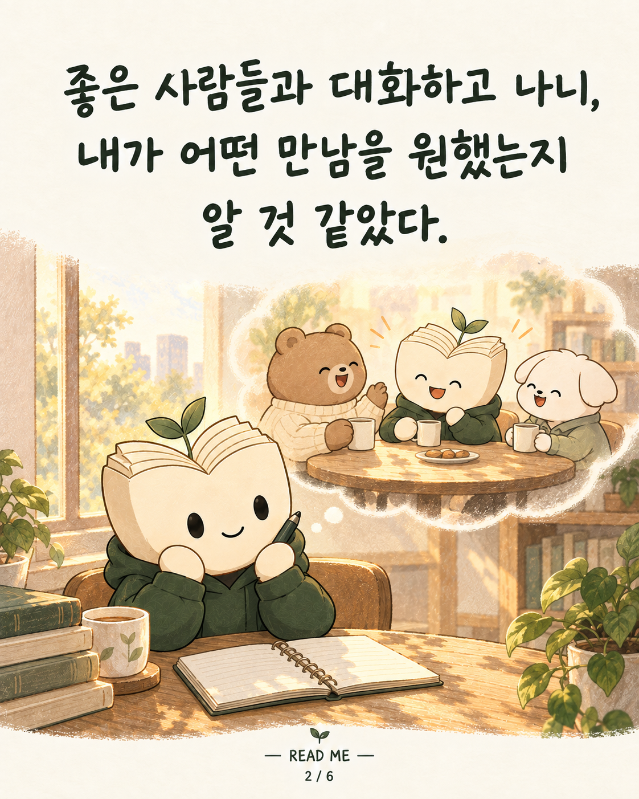

좋은 대화를 경험하고 나니, 내가 어떤 사람들과 함께하고 싶은지 조금은 알 것 같았다. 내 이야기를 존중해 주고, 나도 그 사람의 이야기를 궁금해하는 관계. 고민과 해보고 싶은 일을 편하게 나누고, 서로 응원할 수 있는 관계. 한 번 만나고 끝나는 인연보다, 대화를 꾸준히 이어가며 같이 나아갈 사람들이 곁에 있었으면 했다. #README #리미 #독서모임 #관계 #함께성장